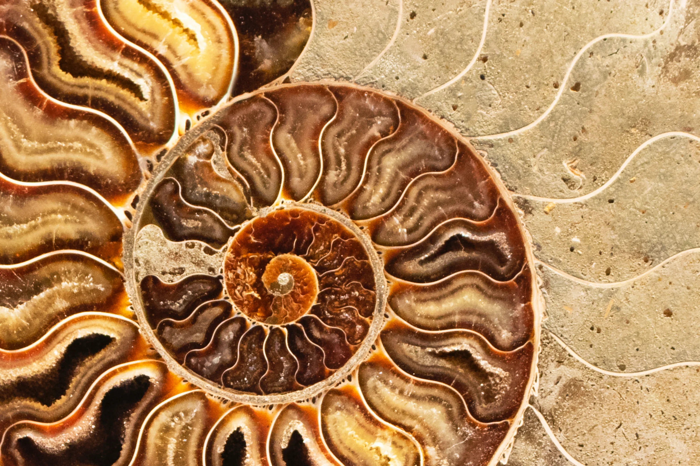
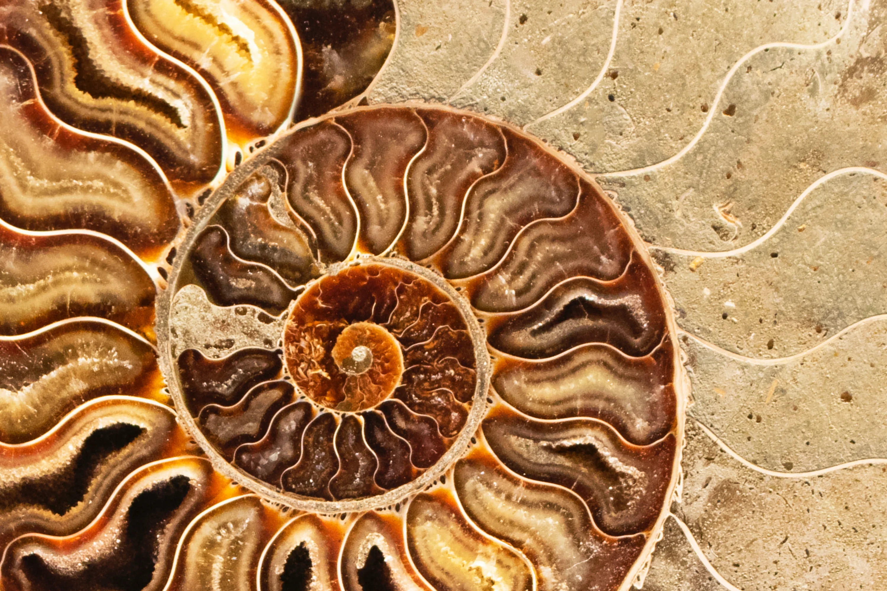

Šta je to fraktal?
Matematičku formulu fraktala je izveo francuski matematičar Benoa Mandelbrot 1975. godine i dao
joj vizuelni identitet. Mandelbrotov skup je najsavršeniji od svih fraktala. Kada povećamo njegove
delove, ponovo se beskonačno ukazuju isti oblici - on ima svojstvo samosličnosti.
Isceljujuća moć fraktala pripisuje se njihovom obliku, boji i strukturi koju grade. Svojim bojama i
oblicima fraktali emituju vibracije koje po principima harmonične rezonance u nama pobuđuju
osećaje sklada, mira i lepote. Fraktali su svuda oko nas, ne samo u obliku i izgledu stvari koje nas
okružuju, već i samoj srži raznih fenomena, u funkcijama koje opisuju jednostavnije i kompleksnije
sisteme i procese. Prirodni oblici u kojima prepoznajemo fraktale do izvesne granice su oblaci na
nebu, planinski venci, munje, morske obale, reke, snežne pahuljice, ali i neke biljke i životinje kao i
naše ćelije. Crtajući fraktale mi crtamo sebe, kao deo veće celine.
 

Fraktalna metoda
Kroz crtanje integrativnog fraktalnog crteža po određenim smernicama radi se na povezivanju verbalnog i neverbalnog, kao i leve i desne hemisfere mozga. Uz pomoć linije i boje utičemo svesno na promene u nervnoj strukturi. Preko boja saopštavamo sebe i shvatamo signale koje nam okruženje preko njih šalje. U našoj školi bojama se daje posebno mesto jer se polazi od njihovog uticaja na nas putem frekvencija koje boje emituju. IFC pored jasne slike stanja osobe koja crta, daje mogućnost temeljne promene lične pozicije i transformacije naših duboko skrivenih blokada i strahova, kojih najčešće nismo svesni. IFC doprinosi i razvijanju ličnih potencijala i talenata. IFC se bazira na stečenim znanjima i iskustvu Metode fraktalnog crteža (MFC) ruske autorke Tanzilije Z. Polujahtove.